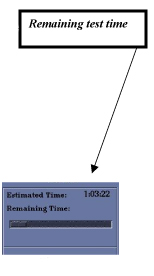

Illustration 9: Remaining Test Time

Illustration 9: Remaining Test Time
Remaining test time displays in the upper right corner of the SPT screen shown in Illustration 9 and Illustration 10.
Illustration 10: Close Up of Remaining Test Time

Test progress and results will display in the lower portion of the SPT page shown in Illustration 11.
Illustration 11: Test Progress and Results

IMPORTANT: Failures must be resolved and the System Performance Test repeated before proceeding to the PM Check.
| NOTE: | For more information on System Performance Tests, including phantom set up, refer to SPT Check and Troubleshooting for XRMB. |